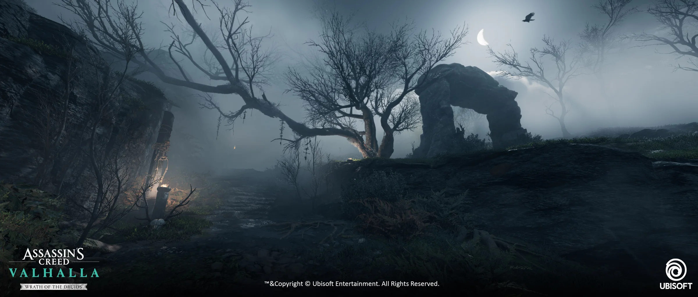
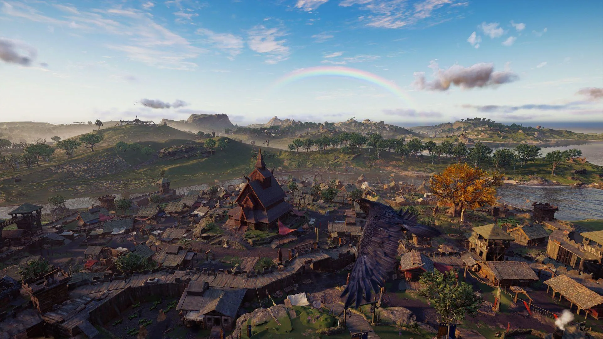
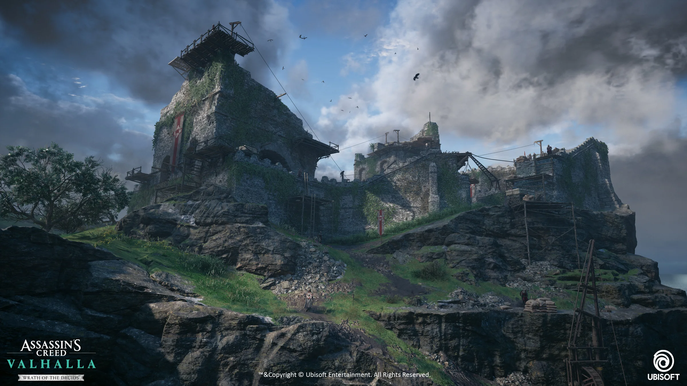
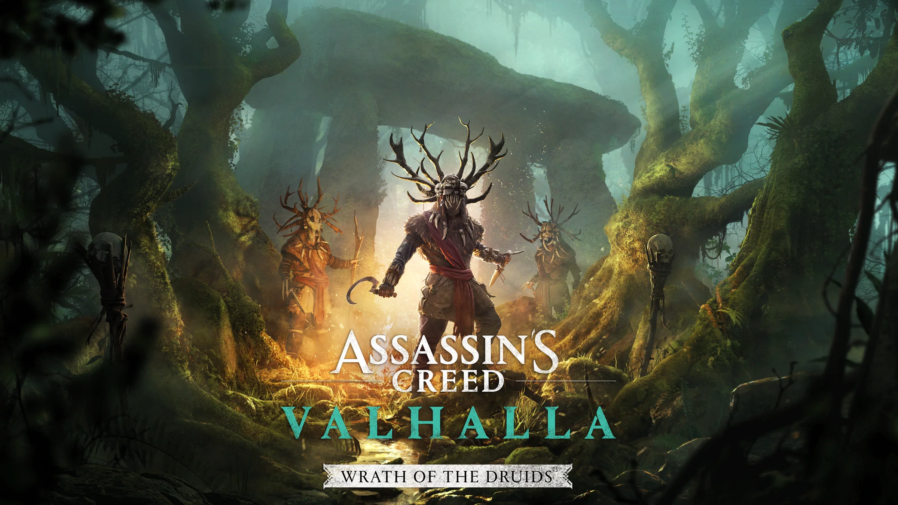

Territory & Environment
Overall identity, environmental contrast, biome hierarchy, landmarks, regional differentiation, composition and player-facing visual readability.
Case study · AAA Art Direction
Full visual leadership of the expansion at Ubisoft Bordeaux—from the initial art-direction framework to daily on-floor direction across every art discipline, final implementation, and the worldwide marketing key art developed with Ubisoft Montreal.

The mandate
My responsibility was not limited to environment supervision or final visual approval. I owned the artistic direction of the expansion as a whole: defining the identity of Ireland, translating that identity into executable direction for each department, directing the art team daily on the production floor, aligning priorities with production, working daily with Graphic Technical Director Philippe Trarieux “Bob” to translate the vision into the game engine, and protecting the direction through final delivery.
The central challenge was to create a territory that felt immediately new and memorable while remaining fully credible inside Assassin’s Creed Valhalla. Every discipline had to contribute to the same world: landscape, architecture, materials, characters, lighting, atmosphere, VFX, technical solutions and marketing representation.
Internal art-direction decks, benchmarks, review packs, production notes, paintovers and iteration documents remain confidential and are not displayed. This page describes their function, the leadership process and the public result without reproducing proprietary material.
Art-direction scope
I converted the creative ambition into a shared visual system, then adapted the direction to the language, constraints and decisions of each discipline.
Overall identity, environmental contrast, biome hierarchy, landmarks, regional differentiation, composition and player-facing visual readability.
Historical coherence, settlement language, structural families, material contrast, surface vocabulary and consistency between buildings and landscape.
Character identity, silhouette, cultural readability, iteration reviews, visual hierarchy and alignment between narrative intent and final design.
Mood, time-of-day identity, visual focus, weather, ritual atmosphere, supernatural restraint and clarity during gameplay and cinematics.
Artistic intent translated into playable locations, terrain structure, asset reuse, technical constraints, performance considerations and scalable solutions.
Department-specific direction packs, references, benchmarks, paintovers, comparisons, briefs and daily review material used to turn intent into actionable decisions.
Leadership & core partnerships
The artists and leads listed below were under my direct artistic direction during production. I worked with them in person on the floor through daily reviews, visual feedback, problem-solving, milestone preparation and final validation. Alongside this direct leadership, Philippe Trarieux “Bob” was my daily technical partner, helping translate the artistic direction into robust in-engine implementation.
Public shipped work
These public images demonstrate different parts of the finished visual identity. They are team-produced work shown here as evidence of the direction, not as claims of individual asset authorship.



Marketing Art Direction
I completely directed the final marketing visuals in direct collaboration with the Ubisoft Montreal team. My role was to ensure that the campaign did not become a generic fantasy image, but remained a concentrated, immediately readable expression of the expansion’s actual visual identity.
I guided the composition, character staging, environment, monumentality, atmosphere, lighting, narrative clarity, visual hierarchy and the controlled suggestion of the supernatural. I then supervised the adaptation of the final composition across landscape, square and vertical formats.

Project credits
Final assets were created collaboratively. The credits below distinguish overall art direction, direct departmental leadership and production partnership.
David Pellet
Olivier Fleurette
Alexandre Lutz
Arnaud Kleindienst, Lucas Leger
Corentin Marquet, Nicolas Gorszczyk, Natanael Millet, Raphael Thiessard, Anthony Lemetayer, Jerome Rajcek, Quentin Donnaint, Cristel Mrowka
Laurent Harduin, Ines Helmer
Joao Pereira Lemos Costa, Gery Arduino
Robert Farrand
Hugo Marouzé, Anaïs Riff
Ludovic Petiot
Philippe Trarieux “Bob” — David Pellet’s daily technical partner for in-engine implementation of the art direction.
Olivia Forni, Nicolas Freeman
Ubisoft Montreal team — final key-art production under David Pellet’s direct visual supervision.